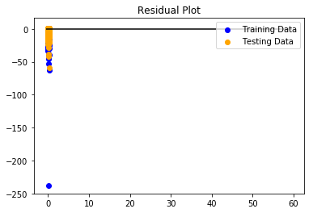
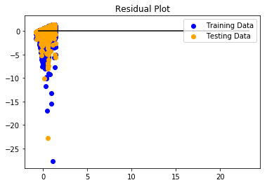
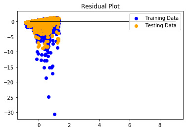

Grocery Sales Forecasting
Using machine learning to understand consumer behavior.
The Data
The data we used in our project was found in a competition on kaggle that had concluded, and contained grocery store data for several cities in Ecuador. We were originally going to analyze hospital bed availability data and compare it to COVID 19 infection rate data simply due to it being the most prevalent information available, but we found something much more palatable/less depressing so we went in that direction instead. The grocery store data was stored in csv files that we downloaded and were mostly able to access with no problem using pgAdmin for storage. However, there was one file that was 4.8 GB in size and had over a hundred million rows of data, and we were unable to work with it because none of our computers could handle that much for any singular process, let alone the multiple, we would need to run for our machine learning algorithm.
The Data Manipulation
Our group needed to refine our data into something much more manageable to even be able to properly access it, so we needed a plan with a significantly smaller scope in mind. With a lot of brainstorming and some assistance from our staff resources, we decided to narrow our dataset down to two dates out of the year for all stores in our datasets: The day before, and the day after Christmas. This simple shift in our scope made the data much easier to work with and gave us something that we could analyze and project trends with our algorithm.
Grocery Holiday Visualizations

Rage Against the Machine Learning
Using the scikit-learn package in python, we were able to utilize multiple machine learning algorithms (basic linear, Ridge, Lasso, and Elastic Net regression) for a regression problem of how many units of a product are predicted to sell based on the other features (store number, item number, year, and if it was on promotion). However, since we had issues manipulating and utilizing the full dataset, the model was inaccurate (with a R^2 score of 0.0108).
Looking at the data just in the two days, we shifted the target prediction to be the total sales of a product by year. The new features or data points included a count of the stores selling the product and the total stores that had the item on promotion. This manipulation of the data and shift in the target produced better model results, with an R^2 score of 0.1924 from the Elastic Net algorithm. (That's over 178.74% difference!)
1 Day Model
LINEAR REGRESSION MODEL WITH SCALED DATA
RMSE Score:
0.83874873850647
RSquare Score:
0.010813647895218437
1 Day Model + Units Sold
LINEAR REGRESSION MODEL WITH SCALED DATA
RMSE Score:
0.9637005167794067
RSquare Score:
0.15514638794039926
2 Day Model + Units Sold
LINEAR REGRESSION MODEL WITH SCALED DATA
RMSE Score:
0.7836763143842802
RSquare Score:
0.19190353538491678